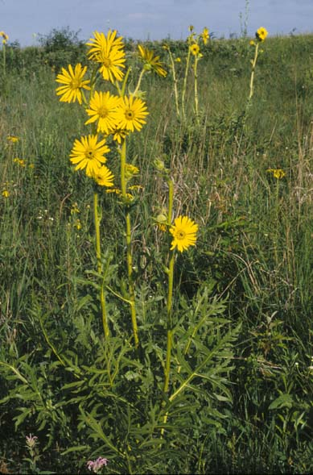
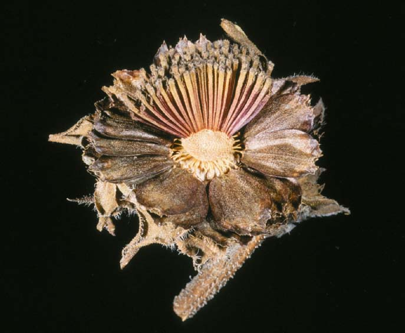
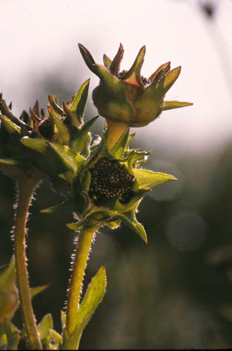
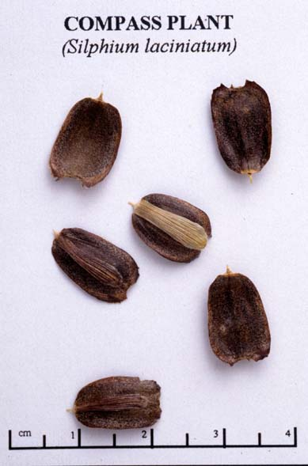

Silphium laciniatum
Family: Asteraceae
Compass Plant
Swink/Wilhelm #5



FLOWERING: Late June to August
SEED TIMING: Mid-September to late October
HABITAT: Dry to mesic prairie
DIAGNOSTIC FEATURES: 3 - 12 feet. Tall plant with heads made up of yellow ray and disk flowers enclosed by large, hairy-edged, green bracts; stem exudes a resinous juice. Leaves are 12 - 18 inches long, alternate, rough, large, deeply divided, vertical, edges mostly oriented in north-south direction, unstalked or short-stalked.
TO PICK: Seed heads turn brown and dry looking. Break open a head to see if seed remains. Seed is black and is formed by ray flowers only so is located on the perimeter of the disk. Pick early. Similar to Rosinweed, Cup plant, and Prairie Dock.